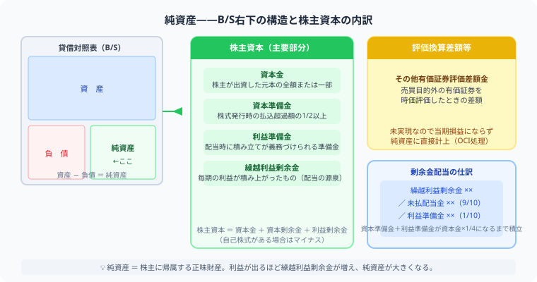

【簿記2級】純資産・剰余金の配当を完全解説
資本金・準備金・自己株式の仕訳例つき
こんにちは、大谷です！実は「純資産」の勉強を始めたとき、僕が本当につまずいたのは計算そのものより「言葉の壁」でした。「資本準備金」と「利益準備金」、漢字も響きも似すぎていて最初の1週間はずっとごちゃ混ぜ。極めつけは「自己株式」という名前を見て「資産の一種でしょ？」と思い込み、盛大に借方へ書いて派手に爆死したこともあります（笑）。名前だけでは正体がつかめない科目が並ぶ単元だからこそ、今回は「言葉の意味」より「どのグループに属するか」で整理できる図解を用意しました。当時の僕と同じ場所でつまずいている人に、一番刺さる解説を届けます！
また、毎日のブログ執筆やアプリ開発のモチベーション維持のために、記事の末尾のほうにある「いいねボタン」をポチッと押してもらえると、めちゃくちゃ励みになりますしすごく嬉しいです！それでは、一緒に攻略していきましょう！
- 純資産は2グループ——「株主の元手（資本金・資本準備金）」と「会社が稼いだ利益（利益準備金・繰越利益剰余金）」に分かれる
- 自己株式（じこかぶしき）はマイナス項目——資産ではなく純資産から引き算される
- 配当の仕訳は110,000 = 100,000 + 10,000——配当金の1/10を利益準備金として積み立てる
- 1/4ルール——準備金合計が資本金の1/4に達するまで積立が義務。試験で超重要！
純資産（じゅんしさん）は簿記2級の第3問・第4問で必ずといっていいほど登場します。「資本金と資本準備金の違いは？」「配当のとき繰越利益剰余金からなぜ110,000円も減るの？」——そんな疑問をこの記事で図解つきで完全に解決します。
🗺️ 純資産とは——B/Sの「右下」に隠れた2つのグループ
純資産（じゅんしさん）とは、資産から負債を引いた、会社の正味（しょうみ）の財産です。貸借対照表（B/S）の右側の下半分に書かれます。まず次の図解で、純資産全体の構造を一気に把握してください。

株主資本は「資本金・資本準備金・利益準備金・繰越利益剰余金」の4層構造。配当時は繰越利益剰余金から支払い、利益準備金を積み立てます。
① 図解の「2色のエリア」の読み方
図の上半分には青いエリア（株主からの元手〔もとで〕）とオレンジのエリア（会社が稼いだ利益）の2つのグループが描かれています。これが純資産を理解する一番の鍵です。
資本金・資本準備金は株主が最初から持ち込んだお金なので「元手グループ」。 利益準備金・繰越利益剰余金は会社が事業で稼いだお金なので「稼ぎグループ」。 この2分類さえ頭に入れておけば、試験で科目を取り違えるミスが激減します。
② 自己株式（じこかぶしき）は「△マイナス」の特別な項目
図解の下部にピンク色で描かれている「△マイナス△ 自己株式（じこかぶしき）」に注目してください。
会社が自社の株式を買い戻すと、お金が社外に出ていくため、純資産が減ります。 試験では「資産だと思って借方に書いてしまう」ミスが頻出ですが、 自己株式の仕訳は純資産（貸借対照表の純資産の部）のマイナスとして処理します。
図解の計算式「純資産 = 資本金＋資本準備金＋利益準備金＋繰越利益剰余金 △自己株式」の通り、 最後に引き算することを忘れないでください。
③ 純資産の4科目まとめ表
| 科目名 | グループ | ひとことメモ |
|---|---|---|
| 資本金（しほんきん） | 株主の元手 | 株主が出資した会社の基礎資金 |
| 資本準備金（しほんじゅんびきん） | 株主の元手 | 株式発行額のうち資本金にしない部分 |
| 利益準備金（りえきじゅんびきん） | 会社の利益 | 法律で強制積み立て。配当のたびに増える |
| 繰越利益剰余金（くりこしりえきじょうよきん） | 会社の利益 | 配当の源泉（げんせん）。毎期の純利益を積み重ねる |
| 自己株式（じこかぶしき） | 純資産のマイナス | △控除項目。資産ではない点に注意 |
📈 株式発行の仕訳——資本金と資本準備金に分ける
会社が株式を発行して資金を集めるとき、集めたお金を資本金と資本準備金に分けて記録します。会社法では、払込金額の最低2分の1以上を資本金にすることが義務付けられており、残りは資本準備金にできます。
株式を1株あたり1,000円で1,000株発行し、全額が当座預金に振り込まれた。払込金額の2分の1を資本金とし、残りを資本準備金とする。
払込総額 = 1,000円 × 1,000株 = 1,000,000円。その半分500,000円が資本金、残り500,000円が資本準備金です。
資本準備金も立派な純資産の一部です。将来の株式の消却（しょうきゃく）や欠損填補（けっそんてんぽ）などに使える、会社の「緊急用の財源」としての役割があります。
💰 剰余金の配当——「110,000円の内訳」を図解で理解する
配当の仕訳は、図解の下半分「お金の流れ図」を頭に入れておくと、なぜ110,000円という金額になるのかが一瞬で理解できます。
配当のお金の流れ（図解と連動）
例：110,000円
つまり、株主に配る100,000円（未払配当金）の10分の1である10,000円を、利益準備金という名前の「法律で決められた貯金箱」に移すことが法律で義務付けられています。だから、大元のサイフ（繰越利益剰余金）からは合計110,000円が減ることになります。
この「10分の1ルール」が、仕訳の数字の根拠です。
株主総会で繰越利益剰余金から100,000円の配当を決議した。利益準備金の積み立て額は配当金の1/10とする。
① 未払配当金 100,000 → 株主に渡す配当金そのもの
② 利益準備金 10,000 → 配当の1/10（100,000 ÷ 10 = 10,000）
③ 繰越利益剰余金 110,000 → ①＋②の合計（大元のサイフから出ていく合計額）
1/4ルール——試験で絶対に忘れてはいけない上限
図解の最下部に書かれている「ポイント：資本準備金＋利益準備金が資本金の1/4に達するまで」というルールがあります。
試験問題では「利益準備金の積立上限まで残り〇〇円」という条件が付くことがあります。 そのとき積立額は「配当の1/10」と「上限までの残額」のいずれか小さい方になります。 「1/4ルール」は頭の片隅に置いておきましょう——本番で必ず点差が出るポイントです！
本番でパニックにならないよう、電卓を叩く順番を固定しておきましょう。
① 上限額を出す：資本金 ×「25（％）」または「0.25」を掛けて、資本金の1/4（上限額）を先に計算する。
② 現在の準備金合計を出す：資本準備金＋利益準備金の残高を電卓に足し込み、「今どこまで積み立て済みか」を確認する。
③ 残り枠を出す：①（上限額）－②（現在の準備金合計）＝「あと積み立てられる枠」。
④ 配当の1/10と比較：配当金 ÷ 10 の金額と③「残り枠」を見比べ、小さい方を利益準備金の積立額として採用する。
計算用紙には、問題を読んだ直後に「上限＝ ／ 残り枠＝ ／ 配当1/10＝」の3つの空欄を先に書き出しておくのがコツ。数字を埋めていくだけで判断ミスがなくなり、電卓の叩き直しも防げます。
⚠️ よくあるミス（実戦版）——ここで合否が分かれる
- 資本準備金と利益準備金を混同する——「資本」か「利益」かで所属グループが変わります。名前に引きずられず、元手グループ・利益グループで整理しましょう。
- 自己株式を資産として借方に書いてしまう——自己株式は純資産のマイナス（△）です。取得したら借方に「自己株式」を書きますが、B/S上は純資産から控除されます。
- 配当を費用として処理してしまう——配当は費用ではありません。純資産（繰越利益剰余金）の減少として処理します。P/L（損益計算書）には登場しません。
- 繰越利益剰余金を減らし忘れる——仕訳で未払配当金と利益準備金だけ書いて、繰越利益剰余金を忘れると借方が空白になります。必ず合計110,000円（例）を借方に書きましょう。
- 株式発行費を資本金から控除する——株式発行にかかった費用は資本金から引くのではなく、「株式交付費」として費用処理します。
📋 まとめ——試験前に確認するチェックリスト
純資産の重要ポイント
この記事が少しでも役に立ったら、僕の毎日の執筆・アプリ開発のモチベーション維持のために、この下にある【いいねボタン】をポチッと押してもらえると、めちゃくちゃ嬉しいです！